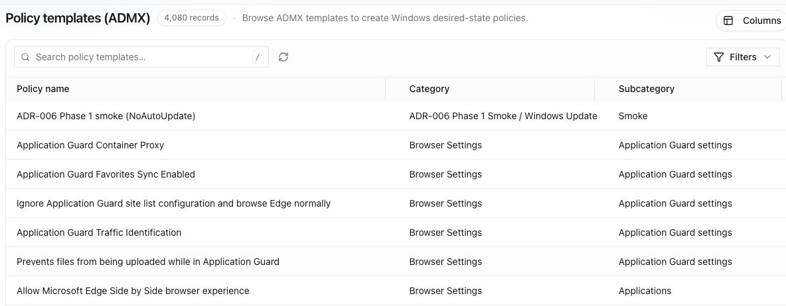
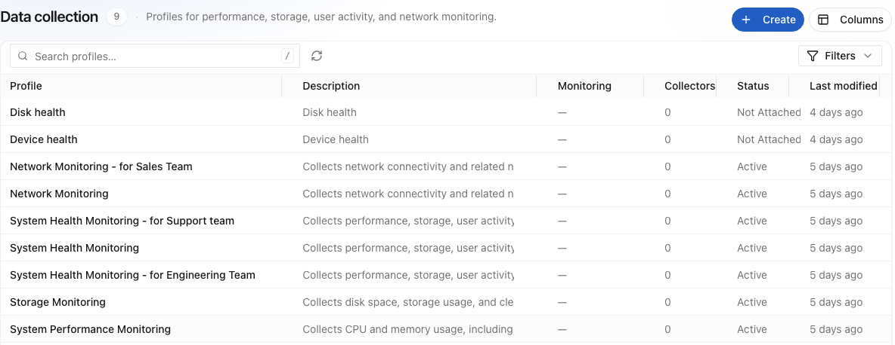
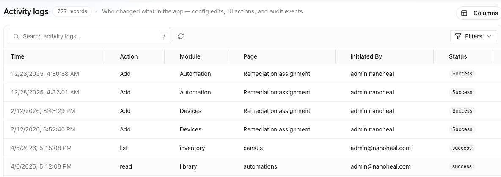

Home / Platform / Compliance & Governance
03 — Compliance & Governance
IT management automated. Compliance continuously enforced.
The context layer gives intelligence the knowledge to extend its capabilities without code — automating software, patches, security updates and policies by persona, while continuously detecting and restoring drift to keep the fleet compliant.
The issue
Nobody set out to run four agents. It just happened.
What normally happens
A tool per job.
One platform measures experience. Another distributes software. A third handles patch. A fourth enforces policy. Each ships an agent, each keeps its own inventory, each has its own idea of what a device is — and reconciling them is somebody's full-time job.
What Nanoheal does
One engine, many kinds of work.
Installing software, applying a patch, enforcing a policy and repairing a broken service are the same underlying operations against files, registry, services and configuration. One capability set covers all of it.

01 — Software distribution
Deploy, repair, roll back, reclaim.
Install and update across the fleet or a targeted population, with repair for failed installs and rollback when a version misbehaves. Usage data from the analytics side identifies licences nobody is using.
Because distribution shares the engine with remediation, a failed install isn't a report you chase — it is a symptom, and it can trigger its own repair.
02 — Patch management
Compliance you can evidence, on the estate you actually have.
Assess, stage, deploy and verify across operating systems and third-party applications, with rings, windows and rollback. Verification is measured on the device, not inferred from a deployment record.
03 — Device compliance policy
Policy that corrects drift instead of reporting it.
Define the desired state — settings, profiles, security configuration, encryption, required software — in the same plain-language knowledge layer as everything else.
If you run Intune or a comparable MDM, the familiar gap is between what policy says and what the device does: a profile fails to apply, drift accumulates, and the console reports non-compliance without resolving it. Nanoheal treats non-compliance as a symptom like any other — the drift itself triggers the correction, on the same engine, with no script involved.
Reporting a device out of policy is a finding. Putting it back in policy is the job.
Policy templates.
4,080 ADMX templates, browsable by category and subcategory. The Windows policy vocabulary your team already knows, available as objects to scope rather than settings to re-author.
Protection profiles.
Lockdown baselines expressed as policies over registry, services, application control, filesystem paths and removable media — Defender real-time protection, BitLocker on the OS volume, machine inactivity limits.
Collection profiles.
What the agent gathers in the first place: performance, storage, user activity and network. The measuring half is itself a scoped, published configuration — not a fixed sensor set you inherit.
All three are the same kind of object as an automation, and they travel the same route: attach to a device classification, stage the change, publish it. One change-control path covers remediation, software, telemetry and hardening, which is the reason a compliance conversation here does not need a second tool to finish.

04 — IT tasks and requests
The routine work that still lands on a human.
Profile resets, printer and peripheral setup, drive mapping, certificate renewal, disk cleanup, onboarding and offboarding sequences, VPN and Wi-Fi reconfiguration.
These are what a large share of service-desk contacts actually consist of, and they are the clearest case for the economics argument: individually small, collectively enormous, and never worth a bespoke automation project. When the next automation costs almost nothing, they finally get built.
05 — Governance
Autonomy you can hand to an auditor.
Automation that runs unattended has to be governable, or it does not get approved. Every capability is signed and versioned, every action is scoped by policy, and every execution is recorded.
Validated once.
A human approves the knowledge entry before it is ever trusted, and the approval is versioned with it. Nothing self-authors its way into production.
Scoped by policy.
Which populations, which maintenance windows, which blast radius, which actions require a human in the loop — checked before anything runs, not asserted afterwards.
Evidenced.
What ran, where, when, under which version and with what result — exportable as the evidence pack an audit asks for, not reconstructed from logs.

See a symptom resolve itself.
Bring us your top three call drivers. We'll show you the same three resolving on a live endpoint — with no script written, and nothing left running to watch for them